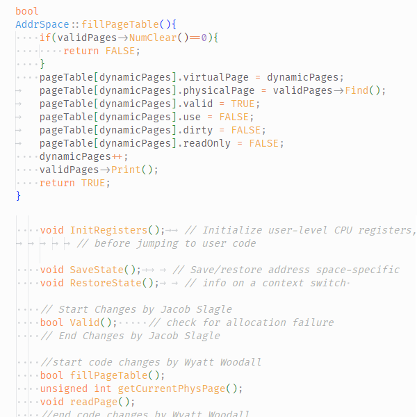

Our goal for this project was to create a web application
to collect donations for a generic non-profit client.
The PetHaven web application is written in Java and JavaScript
using Spring Boot, Maven, and Stripe API.

Virtual Memory Implementation
Operating Systems group project where we were tasked to implement
virtual memory on a rudimentary operating system, Nachos. This project
was written in C/C++ on Ubuntu Linux through VirtualBox.